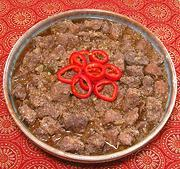

|
Vindaloo PorkIndia, Goa | ||||
| Serves: Effort: Sched: DoAhead: |
6 w/rice *** 10+ hrs Best |
India learned this dish from 16th century Portuguese sailors in Goa, the port through which they introduced hot chilis, vinegar and pickled pig. Pickled pig and vinegar didn't go far from Goa - but chilis were soon the darling of southern Asia. | |||
|
2-1/4 ------ 1/4 1/2 1-1/2 2 20 4 2 14 8 1-1/2 ------ 2-1/4 10 2 7 5 1 |
# --- c c t t in cl in --- # cl in T t |
Pork, lean only -- Marinade Water Vinegar, Malt Coriander seed Cumin seed Dried Red Chili (1) Cloves Cinnamon Peppercorns black Garlic Ginger root --------------- Onion Garlic Ginger Chili Serrano (2) Mustard Oil (3) Salt |
See Note-4 for serving and storage, and also Comments. PREP - (9+ hrs - 1-1/4 hrs work)
|
imm_pigvinda1 041024 r 100821 r 140508 var -
www.clovegarden.com
©Andrew Grygus - agryg@aaxnet.com - Linking to and
non-commercial use of this page is permitted.